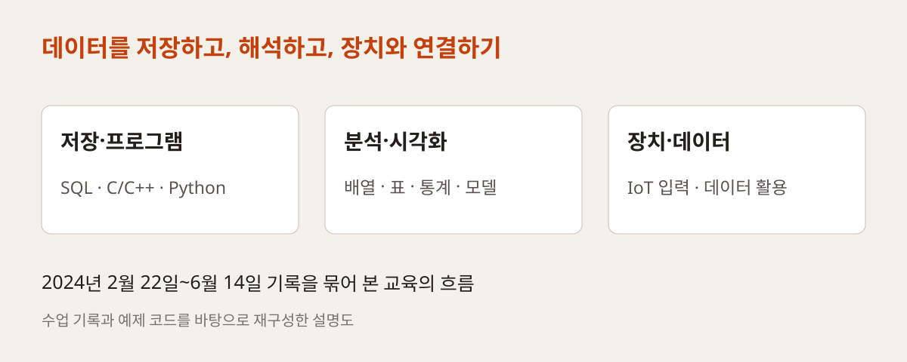
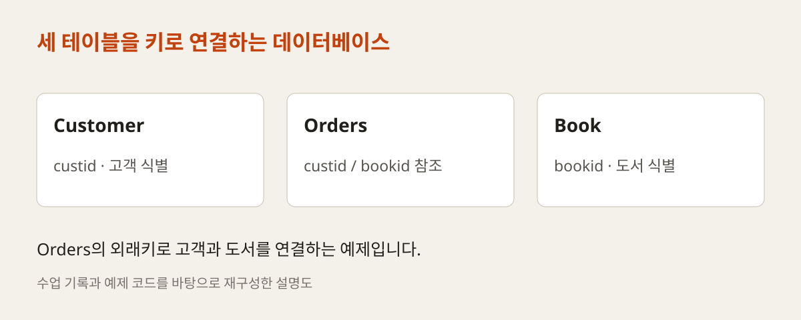
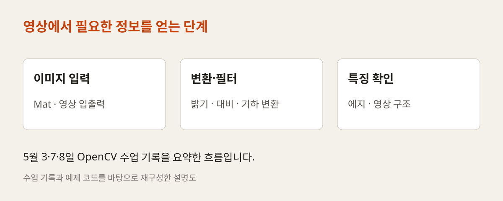
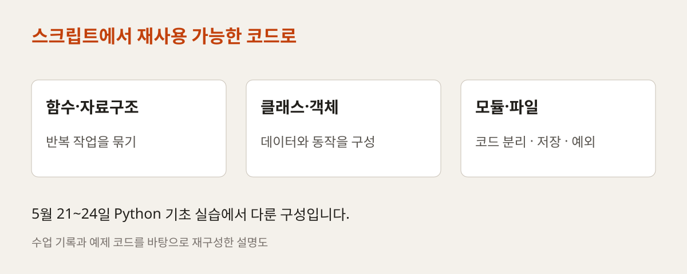
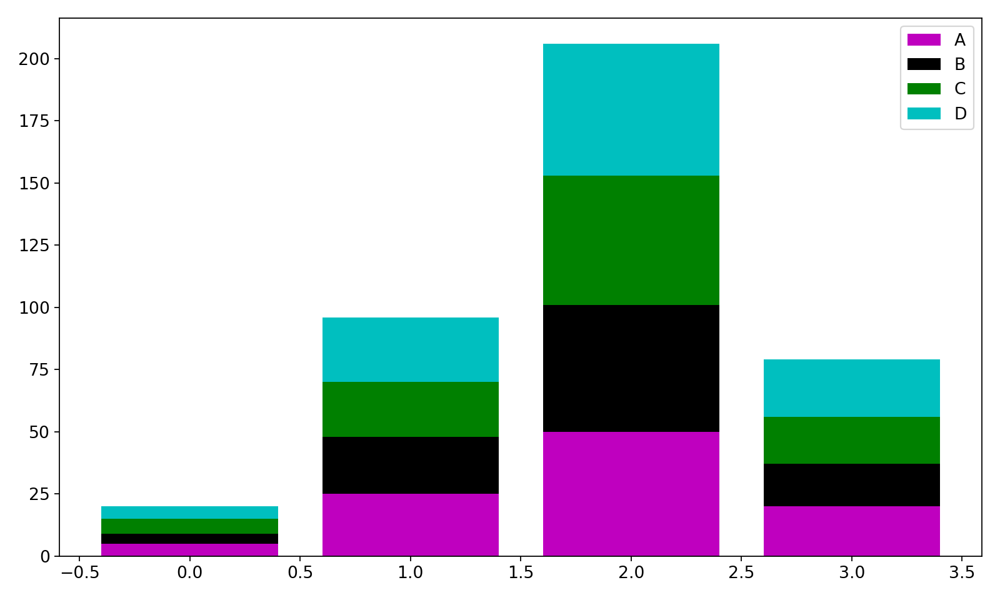
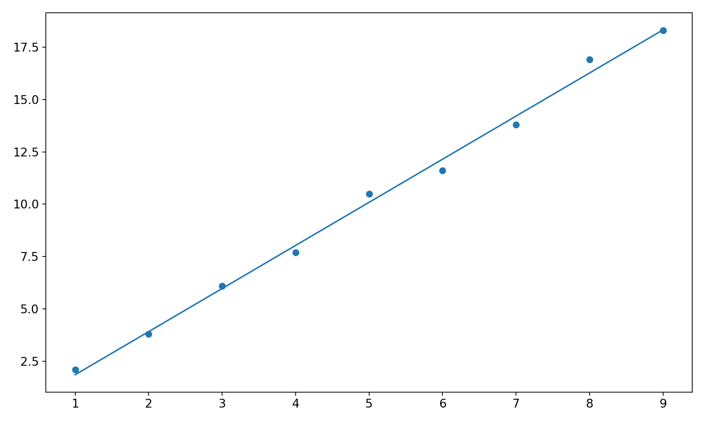
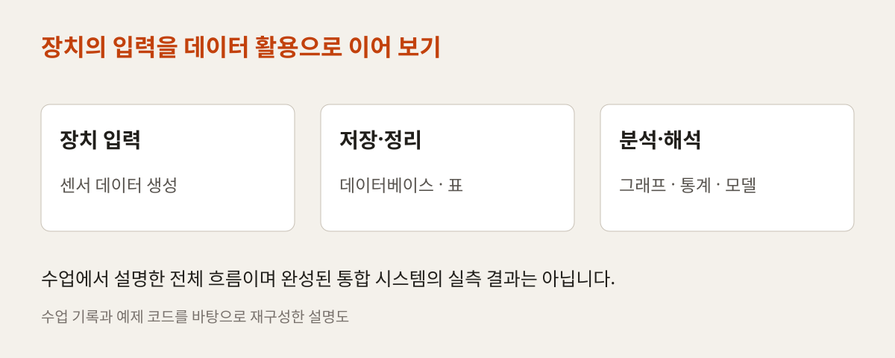

OFFLINE EDUCATION / SEJONG 2024
데이터를 저장하고,
분석과 장치로 연결하다
데이터베이스와 C/C++, 영상 처리, Python 데이터 분석에서 IoT 장치 설정까지. 2024년 고려대 세종 교육의 수업 기록과 실제 예제로 살펴보는 학습 흐름입니다.
언어와 도구를 넘어
데이터의 흐름을 익히는 수업
테이블을 만들고, 프로그램으로 데이터를 읽고, 그래프로 표현하고, 모델의 결과를 해석합니다. 여러 기술을 따로 나열하기보다 기록에 남은 실습이 어떻게 이어졌는지 여섯 주제로 정리했습니다.

크게 보기 ↗원본 수업 일지의 내용과 날짜를 묶어 재구성한 학습 흐름입니다. 공식 전체 교육기간이나 모든 교과를 나타내는 시간표는 아닙니다.
- 이번 글의 범위
- 2월 22일~6월 14일
저장소에 남은 수업 기록 - 주요 연결
- DB·프로그래밍·영상 처리
통계·시각화·IoT - 근거 자료
- 수업 일지·예제 코드
교과 계획서·프로젝트 보고서
2024 / 02.22–03.08
데이터를 저장하고 프로그램에서 사용하기
2월 22일 기록은 Ubuntu·Visual Studio Code·Git과 데이터베이스 개발 환경을 준비하는 일에서 시작합니다. MySQL에서 데이터베이스와 테이블을 만들고, Book·Customer·Orders 예제로 데이터를 저장하고 조회했습니다. 이후 집계, 내장함수, 부속질의와 뷰·인덱스로 범위를 넓혔습니다.
3월에는 Python과 C 프로그램에서 데이터베이스에 접근하는 코드를 다뤘습니다. SQL을 편집기에서 실행하는 경험에서 프로그램의 기능으로 연결하는 단계입니다. make·CMake와 디버깅, 정규화·트랜잭션도 수업 기록에 남아 있습니다.

크게 보기 ↗저장소의 create_table.sql에 정의된 세 테이블과 외래키 관계를 요약했습니다. 실제 고객정보가 아닌 교재용 테이블 구조입니다.
원본 예제 ↗2024 / 05.03–05.08
C++로 영상을 읽고 바꾸기
5월 3일에는 OpenCV 설치와 CMake 설정, 영상 처리·인식의 기본 개념과 모던 C++ 문법을 다뤘습니다. Mat 등의 기본 클래스와 영상 입출력을 익힌 뒤 선과 도형을 그리는 실습으로 이어졌습니다.
5월 7~8일에는 마우스·키보드 이벤트, 트랙바, 밝기와 대비 조절, 필터와 기하학적 변환, 에지 처리를 다뤘습니다. 입력 영상의 표현을 바꾸면서 어떤 정보가 강조되는지 확인하는 과정입니다. 영상도 배열 형태의 데이터라는 관점을 뒤의 수치 처리와 연결할 수 있습니다.

크게 보기 ↗수업 일지의 영상 입출력·밝기·필터·변환·에지 실습을 재구성했습니다. 실제 영상 인식 정확도를 비교하는 결과 그림은 아닙니다.
2024 / 05.21–05.24
데이터를 다룰 Python 코드 구성하기
5월 21~24일에는 Python의 변수와 연산자, 입출력, 리스트와 조건문에서 시작해 반복문·함수·문자열을 실습했습니다. 이어 자료구조, Python 스타일 코드와 객체지향 프로그래밍을 다뤘습니다.
모듈·패키지, 예외 처리, 파일과 로그 관리, XML·JSON으로 범위를 넓혔습니다. 데이터를 한 번 출력하는 코드에서 여러 파일로 나누어 재사용하고 저장하는 코드로 발전시키는 구성입니다. 뒤의 NumPy·pandas 실습에서 사용할 언어의 기초를 마련했습니다.

크게 보기 ↗날짜별 기록에 나타난 함수, 객체, 모듈과 파일 처리의 관계를 묶었습니다. 각 주제의 예제는 저장소에서 확인할 수 있습니다.
2024 / 05.27–05.31
표와 그래프로 데이터 읽기
5월 27일부터는 통계와 함께 NumPy 배열, pandas의 Series·DataFrame을 다뤘습니다. 배열을 선택하고 계산한 뒤, 표 형태의 데이터를 묶거나 합치고 집계하는 과정입니다.
Matplotlib·Seaborn·Plotly로 데이터를 시각화하는 실습도 이어졌습니다. 같은 데이터를 표로 읽을 때와 그래프로 볼 때 드러나는 차이를 살폈습니다. 아래 그림은 저장소의 누적 막대그래프 예제를 이번 게시 작업에서 다시 실행한 결과입니다.

크게 보기 ↗pyplotBar.py의 4×4 예제 데이터와 누적 계산을 그대로 사용해 재실행했습니다. 재현을 위해 난수 시드를 고정했고 출력 크기와 여백만 조정했습니다. A~D는 예제 계열이며 교육생 성과나 현장 측정값이 아닙니다.
원본 예제 ↗2024 / 05.31–06.12
모델을 만들고 평가 범위 구분하기
수업은 회귀·분류와 비지도학습으로 이어졌습니다. 6월 초 기록에는 트리와 앙상블, 군집화 등이 있고, 6월 10일부터는 결측치·범주형 데이터·스케일링 같은 전처리와 훈련·테스트 분할을 다시 다뤘습니다.
예측선을 그리는 것과 모델의 성능을 평가하는 것은 구분해야 합니다. 원본 maeRmseR2.py는 작은 예제 데이터에 선형회귀를 적합하고 같은 데이터에서 오차 지표를 계산합니다. 여기서는 계산과 시각화의 학습 예제로 소개하며, 별도 데이터에 대한 일반화 성능으로 해석하지 않습니다.

크게 보기 ↗원본의 x·y 예제 데이터와 선형회귀 계산을 그대로 재실행했습니다. 점은 예제 관측값, 선은 적합된 예측값입니다. 같은 자료로 적합·평가한 그림이며 실제 IoT 예측 성능을 검증한 결과가 아닙니다.
원본 예제 ↗2024 / 05.31 · 06.14
장치에서 생성되는 데이터로 확장하기
5월 31일 수업 기록은 IoT 센서에서 데이터를 만들고, 데이터베이스에 저장한 뒤 분석과 모델 학습으로 이어지는 전체 흐름을 설명합니다. 앞서 다룬 저장·프로그래밍·시각화를 하나의 활용 맥락 안에서 바라보는 단계입니다.
6월 14일에는 한백전자 XNode 장비를 Windows 환경에서 설정하고 Soda IDE와 라이브러리, app.py를 준비한 기록이 남아 있습니다. 장비 사용의 시작점을 확인할 수 있지만, 이 기록만으로 모든 센서 수집·DB 저장·예측 기능이 통합 완성됐다고 단정하지 않습니다.

크게 보기 ↗5월 31일의 데이터 활용 설명과 6월 14일 장비 설정 기록을 연결한 개념도입니다. 장비 사진이나 실제 완성 시스템의 구성도가 아닙니다.
이 과정의 1차 프로젝트 결과보고서에는 3월 20~26일 C언어 게임 제작도 별도로 기록되어 있습니다. 해당 기간은 프로젝트 한 차례의 기록이며, 이 교육 전체의 운영기간으로 사용하지 않았습니다.
문서와 코드로 확인한 교육 기록
데이터베이스 실무 교수계획서에는 최수길이 교수성명으로 기재되어 있고, 1차 프로젝트 결과보고서에도 교육담당으로 확인됩니다. 이 글은 해당 자료와 수업 저장소를 바탕으로 작성했으며, 전체 과정의 단독 강의나 모든 예제의 자체 개발을 의미하지 않습니다.
원본 일지의 일부 링크는 실제 파일 경로와 달라 저장소의 파일 목록을 대조해 연결했습니다. 본문의 두 그래프는 공개 예제 재실행 결과이며 다른 도해는 수업 내용을 설명하기 위해 재구성했습니다. 교육생 개인정보와 행정 서류는 게시하지 않았습니다.